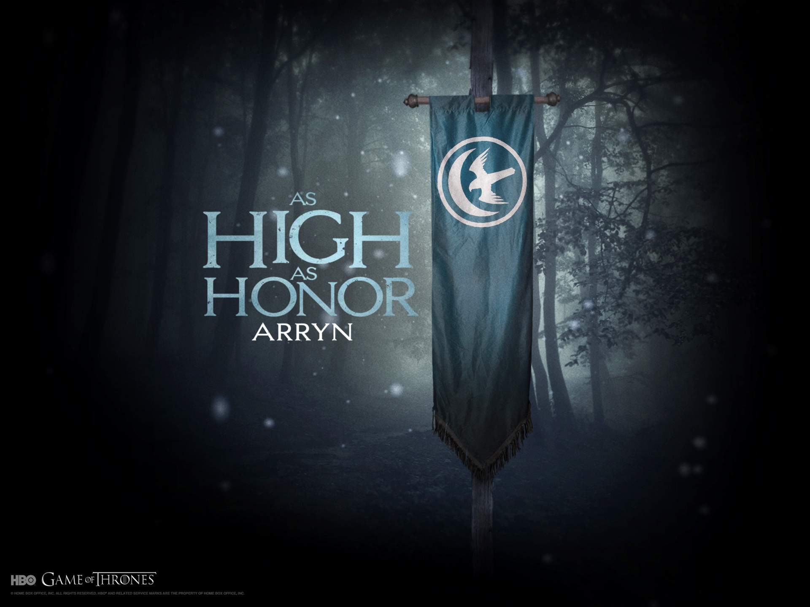

Аррены — один из великих домов Вестероса. Они правят в Долине Аррен тысячу лет. В данный момент лордом Орлиного Гнезда является Робин Аррен.
Земли Арренов находятся в центральной и восточной частях континента, столица региона находится в замке Орлиное Гнездо. Символом дома является белый летящий сокол и месяц на синем фоне, а их девиз: «Высокий как честь».\
Согласно легенде, дом был основан сэром Артисом Арреном, который прилетел верхом на соколе и приземлился на самой высокой горе долины. Потом он победил Короля Грифонов, последнего горного короля первых людей, и стал первым королем гор и долин. Его потомки продолжили править в долине до вторжения Эйгона Таргариена, после чего они стали подчиняться Королю на Железном троне. Замок Орлиное Гнездо считается неприступным и защищает его жителей от нападения диких племен.
Лорд Джон Аррен был уважаемым и благородным мужчиной. Он воспитывал Эддарда Старка и Роберта Баратеона. Когда была похищена Лианна Старк, а Безумный король казнил Рикарда Старка, Джон Аррен поднял восстание. К нему присоединились Старки и Баратеоны. Они заключили союз с домом Талли путём женитьбы Эддарда Старка на Кейтилин Талли. После победы новый король Роберт Баратеон назначил Джона Аррена десницей.
В течение следующих семнадцати лет Джон исполнял свои обязанности, пока не обнаружил, что дети Роберта и Серсеи совсем не были похожи на потомков короля. Вскоре после этого он тяжело заболел и скоропостижно скончался.
У Джона остались жена Лиза и сын Робин.
